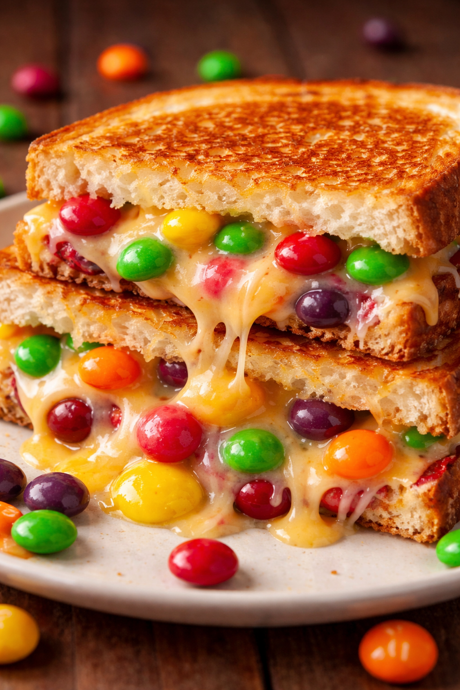

Home
Skittle Grilled Cheese

Description
This recipe delights the inner child in all of us by combining savory and
sweet into a gooey crunchy ball of love.
Ingredients
-
Skittles
-
Cheese
-
Bread
-
Butter
Steps
-
Slather Butter on the Bread
-
Add Cheese & Skittles
-
Grill for five minutes